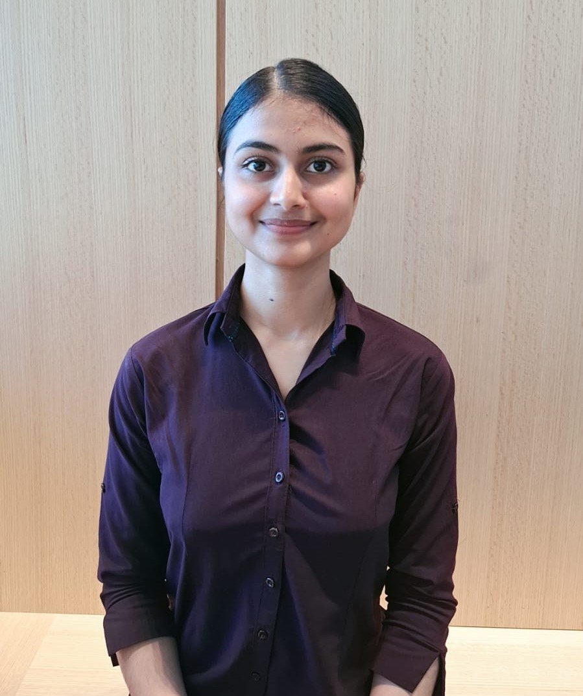

Dapinder Kaur
I do Data Science

About
Since my childhood, I have found fascination in the biological and computer sciences. While in high school, noticing the amazing outputs generated by computers just like the human brain led me to dig deeper into the field of Artificial Intelligence, and I ended up in Data Science & Machine Learning at Red River College Polytechnic.
During my studies, I undertook a Machine Learning project to predict the density and diversity of specific species of birds in the Alpine regions of Canada. This project further fueled my desire to use computer systems to help human beings tackle real-world data and extract meaningful insights from it.
I have always been fond of coding—making complex problems look simpler—along with the curiosity to learn new things along the way. Apart from my technical knowledge, I am a good communicator and have a passion for solving problems.
Skills
Resume
Education
Data Science & Machine Learning
Jan 2024 - Aug 2025
Red River College Polytechnic, Winnipeg, MB
Experience
Peer Tutor
Aug 2024 - Feb 2025
Red River College Polytechnic, Winnipeg, MB
Robotics Developer (Co-op)
May 2025 - Aug 2025
Red River College Polytechnic, Winnipeg, MB
Technical Support Advisor
Sept 2025 - Present
IntouchCX, Winnipeg, MB
Projects
- All
- Data Visualization
- Machine Learning

Career Change Prediction
Developed a Career Change Prediction model to know the factors that influence Career Changes with a model accuracy of 99%. It can predict potential employee turnover or career transition patterns for HR analytics. Used GridSearchCV to experiment DecisionTreeClassifier and Support Vector Classifier from sklearn by standardizing the features with StandardScaler. Then, trained model using DecisionTreeClassifier with accuracy of 99%
ML | DecisionTreeClassifier | SVC | Python | sklearn | Numpy | Pandas | Matplotlib | Seaborn
GitHub
NASA Astronauts since 1959 dashboard
Used Power BI dashboards to visualize the astronauts data by NASA since 1959, a Map visual to locate the birth places of astronauts. Visualized the Space Flights (hr) spent by Astronauts using line and Pie charts, filtering the data with gender and status distribution. Visualized Space Walks (hr), Missions and Military service by astronauts along with the education majors in undergraduate and graduate studies.
Power BI dashboard | MS Excel
GitHubAvian Diversity within Glacier National Park
Developed a Supervised Machine Learning Regression Model to identify the impacts of environmental factors, such as land use, and climate change on bird populations. Used parameter grid for testing the DecisionTreeRegressor model and pipeline for the Support Vector regressor (SVR) model with grid search to tune hyperparameters. Trained the final SVR model with mse of 2.34.
ML | DecisionTreeRegressor | SVC | Python | sklearn | Numpy | Pandas | pickle module
GitHub